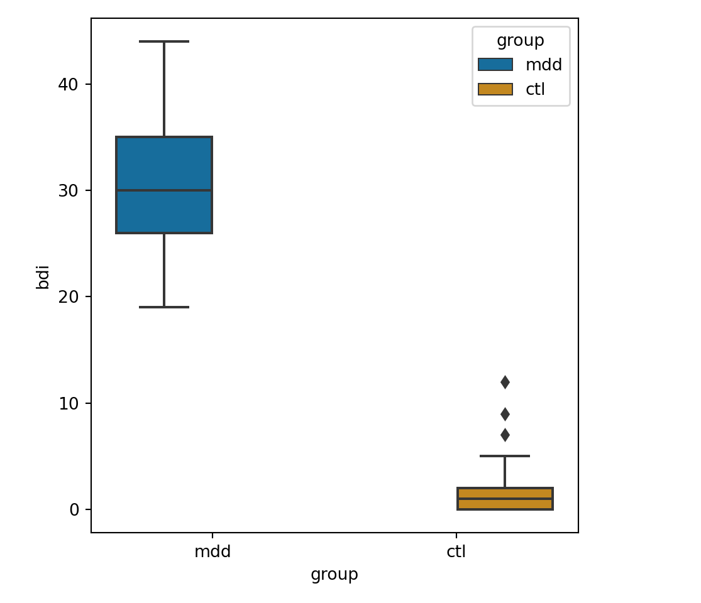

# Pandas for managing datasets
import pandas as pd
# Matplotlib for additional customization
from matplotlib import pyplot as plt
# Seaborn for plotting and styling
import seaborn as sns
# Set theme
# sns.set_theme(style="ticks")
sns.set_palette("colorblind")
import os
# cwd = os.getcwd()
# print(cwd)3 Analisi esplorativa dei dati
Le analisi esplorative dei dati e la statistica descrittiva costituiscono la prima fase dell’analisi dei dati psicologici. Consentono di capire come i dati sono distribuiti, ci aiutano ad individuare le osservazioni anomale e gli errori di tabulazione. Consentono di riassumere le distribuzioni dei dati mediante indici sintetici. Consentono di visualizzare e di studiare le relazioni tra le variabili. In questo Capitolo, dopo avere presentato gli obiettivi dell’analisi esplorative dei dati, discuteremo il problema della descrizione numerica e della rappresentazione grafica delle distribuzioni di frequenza.
3.1 Introduzione all’esplorazione dei dati
Le analisi esplorative dei dati sono indispensabili per condurre in modo corretto una qualsiasi analisi statistica, dal livello base a quello avanzato. Si parla di analisi descrittiva dei dati se l’obiettivo è quello di descrivere le caratteristiche di un campione. Si parla di analisi esplorativa dei dati (Exploratory Data Analysis o EDA) se l’obiettivo è quello di esplorare i dati alla ricerca di nuove informazioni e relazioni tra variabili. Questa distinzione, seppur importante a livello teorico, nella pratica è più fumosa perché spesso entrambe le situazioni si verificano contemporaneamente nella stessa indagine statistica e le metodologie di analisi che si utilizzano sono molto simili. È ovvio che è necessario usare un software sia per il calcolo delle statistiche descrittive che per l’analisi esplorativa dei dati. In questo capitolo dunque le descrizioni dei concetti di base della EDA saranno sempre accompagnate con le istruzioni \(\mathsf{R}\) necessarie per calcolare in pratica le quantità discusse.
3.2 Un excursus storico
Nel 1907 Francis Galton, cugino di Charles Darwin, matematico e statistico autodidatta, geografo, esploratore, teorico della dattiloscopia (ovvero, dell’uso delle impronte digitali a fini identificativi) e dell’eugenetica, scrisse una lettera alla rivista scientifica Nature sulla sua visita alla Fat Stock and Poultry Exhibition di Plymouth. Lì vide alcuni membri del pubblico partecipare ad un gioco il cui scopo era quello di indovinare il peso della carcassa di un grande bue che era appena stato scuoiato. Galton si procurò i 787 dei biglietti che erano stati compilati dal pubblico e considerò il valore medio di 547 kg come la “scelta democratica” dei partecipanti, in quanto “ogni altra stima era stata giudicata troppo alta o troppo bassa dalla maggioranza dei votanti”. Il punto interessante è che il peso corretto di 543 kg si dimostrò essere molto simile alla “scelta democratica” basata sulle stime dei 787 partecipanti. Galton intitolò la sua lettera a Nature Vox Populi (voce del popolo), ma questo processo decisionale è ora meglio conosciuto come la “saggezza delle folle” (wisdom of crowds). Possiamo dire che, nel suo articolo del 1907, Galton effettuò quello che ora chiamiamo un riepilogo dei dati, ovvero calcolò un indice sintetico a partire da un insieme di dati. In questo capitolo esamineremo le tecniche che sono state sviluppate nel secolo successivo per riassumere le grandi masse di dati con cui sempre più spesso ci dobbiamo confrontare. Vedremo come calcolare e interpretare gli indici di posizione e di dispersione, discuteremo le distribuzioni di frequenze e le relazioni tra variabili. Vedremo inoltre quali sono le tecniche di visualizzazione che ci consentono di rappresentare questi sommari dei dati mediante dei grafici.
3.3 Riassumere i dati
Prima di entrare nei dettagli, iniziamo con una considerazione generale. Quando riassumiamo i dati, è ovvio che, necessariamente, buttiamo via delle informazioni. Potremmo dunque chiederci: è una buona idea procedere in questo modo? Non sarebbe meglio conservare, oltre a ciò che viene trasmesso dagli indici riassuntivi della statistica descrittiva, le informazioni specifiche di ciascun soggetto che partecipa ad un esperimento psicologico? Che dire poi delle informazioni che descrivono come sono stati raccolti i dati, come l’ora del giorno o l’umore del partecipante? Tutte queste informazioni vengono perdute quando riassumiamo i dati. La risposta alla domanda ipotetica che ci siamo posti è che, in generale, non è una buona idea conservare tutti i dettagli di ciò che conosciamo. È molto più utile riassumere le informazioni a disposizione perché una tale semplificazione consente i processi di generalizzazione.
In un contesto letterario, l’importanza della generalizzazione è stata sottolineata da Jorge Luis Borges nel suo racconto “Funes o della memoria”. In questo racconto, Borges descrive un individuo che perde la capacità di dimenticare e si concentra sulla relazione tra generalizzazione e pensiero:
Pensare è dimenticare una differenza, generalizzare, astrarre. Nel mondo troppo pieno di Funes, c’erano solo dettagli.
Come possiamo ben immaginare, la vita di Funes non è facile. Se facciamo riferimento alla psicologia, possiamo dire che gli psicologi hanno studiato a lungo l’utilità della generalizzazione per il pensiero. Un esempio è fornito dal fenomeno della formazione dei concetti e lo psicologo che viene in mente a questo proposito è sicuramente Eleanor Rosch, la quale ha studiato i principi di base della categorizzazione. Come è stato illustrato dalle ricerche di Eleanor Rosch, i concetti ci forniscono uno strumento potente per organizzare le nostre conoscenze. Siamo in grado di riconoscere facilmente i diversi esemplare di un concetto – per esempio, “gli uccelli” – anche se i singoli esemplari che fanno parte della categoria sono molto diversi tra loro (l’aquila, il gabbiano, il pettirosso). Inoltre, l’uso dei concetti, cioè la generalizzazione, è utile perché ci consente di fare previsioni sulle proprietà dei singoli esemplari che appartengono ad una categoria, anche se non abbiamo mai avuto un’esperienza diretta con essi – per esempio, possiamo fare la predizione che tutti gli uccelli possono volare e mangiare vermi, ma non possono guidare un’automobile o parlare in inglese. Queste previsioni non sono sempre corrette, ma sono molto utili.
In un certo senso, potremmo dire che le statistiche descrittive ci fornisco l’analogo dei “prototipi” che, secondo Eleanor Rosch, stanno alla base del processo psicologico di creazione dei concetti. Un prototipo è l’esemplare più rappresentativo di una categoria. Per analogia, una statistica descrittiva come la media, ad esempio, può essere intesa come l’osservazione “tipica”. Conoscere il “valore tipico” di un insieme di dati (quale la media o la mediana) è molto utile per quello che ci dice delle altre osservazioni (che sarebbe troppo oneroso elencare): ciò che il valore tipo di una distribuzione ci dice è che le altre osservazioni “assomigliano” al valore tipico. Quindi, con un unico indice riusciamo a catturare ciò che molteplici osservazioni “hanno in comune”. Ovviamente, questa “somiglianza” ha dei limiti e vedremo anche come descrivere in forma sintetica il concetto complementare, ovvero quello della “differenza” tra le osservazioni.
La statistica descrittiva ci fornisce gli strumenti per riassumere, in una forma visiva o numerica, i dati che abbiamo raccolto. Le rappresentazioni grafiche più usate della statistica descrittiva sono gli istogrammi, i diagrammi a dispersione o i box-plot, e gli indici sintetici più comuni sono la media, la mediana, la varianza e la deviazione standard. Questi sono gli strumenti di base della data science.
3.4 I dati grezzi
Per introdurre i principali strumenti della statistica descrittiva considereremo qui i dati raccolti da Zetsche et al. (2019). Questi ricercatori hanno studiato le aspettative negative quale meccanismo chiave nel mantenimento e nella reiterazione della depressione. In questo studio, Zetsche et al. (2019) si sono chiesti se individui depressi maturano delle aspettative accurate sul loro umore futuro, oppure se tali aspettative sono distorte negativamente. In uno degli studi riportati viene esaminato un campione costituito da 30 soggetti con almeno un episodio depressivo maggiore e un campione di 37 controlli sani. Gli autori hanno misurato il livello depressivo con il Beck Depression Inventory (BDI-II). Questi sono i dati che considereremo qui.
Esercizio 3.1 Iniziamo a porci una semplice domanda: vogliamo conoscere il livello di depressione, misurato dalla scala BDI-II, nel campione di soggetti esaminati da Zetsche et al. (2019). La risposta più semplice a tale domanda consiste semplicemente nell’elencare i valori BDI-II del campione.
Soluzione. Iniziamo dunque a leggere i dati in \(\mathsf{R}\). Se il file data.mood.csv si trova nella cartella data contenuta nella working directory, allora possiamo usare le istruzioni seguenti.
df = pd.read_csv('data/data.mood.csv',index_col=0)Stampo il nome delle colonne del DataFrame.
list(df.columns)
#> ['vpn_nr', 'esm_id', 'group', 'bildung', 'bdi', 'nr_of_episodes', 'nobs_mood', 'trigger_counter', 'form', 'traurig_re', 'niedergeschlagen_re', 'unsicher_re', 'nervos_re', 'glucklich_re', 'frohlich_re', 'mood_sad.5', 'mood_fearful.5', 'mood_neg.5', 'mood_happy.5', 'cesd_sum', 'rrs_sum', 'rrs_brood', 'rrs_reflect', 'forecast_sad', 'forecast_fear', 'forecast_neg', 'forecast_happy', 'recall_sad', 'recall_fear', 'recall_neg', 'recall_happy', 'diff_neg.fore.5', 'diff_sad.fore.5', 'diff_fear.fore.5', 'diff_happy.fore.5', 'diff_neg.retro.5', 'diff_sad.retro.5', 'diff_fear.retro.5', 'diff_happy.retro.5', 'mood_sad5_tm1', 'mood_neg5_tm1', 'mood_fearful5_tm1', 'mood_happy5_tm1']Seleziono unicamente le colonne di interesse.
df = df[['esm_id','group','bdi']]
df.head()
#> esm_id group bdi
#> 1 10 mdd 25.0
#> 2 10 mdd 25.0
#> 3 10 mdd 25.0
#> 4 10 mdd 25.0
#> 5 10 mdd 25.0C’è un solo valore BDI-II per ciascun soggetto ma tale valore viene ripetuto tante volte quante volte sono le righe del DataFrame associate ad ogni soggetto (ciascuna riga corrisponde ad una prova diversa su altre variabili).
df.shape
#> (1188, 3)È dunque necessario trasformare il DataFrame in modo tale da avere un’unica riga per ciascun soggetto, ovvero un unico valore BDI-II per soggetto.
df = df.drop_duplicates(keep='first')
df.shape
#> (67, 3)df.head()
#> esm_id group bdi
#> 1 10 mdd 25.0
#> 15 9 mdd 30.0
#> 30 6 mdd 26.0
#> 46 7 mdd 35.0
#> 65 12 mdd 44.0Esaminiamo i dati.
df.groupby('group')['bdi'].describe().round(1)
#> count mean std min 25% 50% 75% max
#> group
#> ctl 36.0 1.6 2.7 0.0 0.0 1.0 2.0 12.0
#> mdd 30.0 30.9 6.6 19.0 26.0 30.0 35.0 44.0Per semplicità, presentiamo i valori BDI-II ordinati dal più piccolo al più grande.
print(*df['bdi'].sort_values())
#> 0.0 0.0 0.0 0.0 0.0 0.0 0.0 0.0 0.0 0.0 0.0 0.0 0.0 0.0 0.0 0.0 0.0 1.0 1.0 1.0 1.0 1.0 1.0 1.0 1.0 2.0 2.0 2.0 2.0 3.0 3.0 3.0 5.0 7.0 9.0 12.0 19.0 22.0 22.0 24.0 25.0 25.0 26.0 26.0 26.0 27.0 27.0 28.0 28.0 30.0 30.0 30.0 31.0 31.0 33.0 33.0 34.0 35.0 35.0 35.0 36.0 39.0 41.0 43.0 43.0 44.0 nandf.shape
#> (67, 3)Escludo il dato mancante.
df = df[pd.notnull(df['bdi'])]
df.shape
#> (66, 3)print(*df['bdi'].sort_values())
#> 0.0 0.0 0.0 0.0 0.0 0.0 0.0 0.0 0.0 0.0 0.0 0.0 0.0 0.0 0.0 0.0 0.0 1.0 1.0 1.0 1.0 1.0 1.0 1.0 1.0 2.0 2.0 2.0 2.0 3.0 3.0 3.0 5.0 7.0 9.0 12.0 19.0 22.0 22.0 24.0 25.0 25.0 26.0 26.0 26.0 27.0 27.0 28.0 28.0 30.0 30.0 30.0 31.0 31.0 33.0 33.0 34.0 35.0 35.0 35.0 36.0 39.0 41.0 43.0 43.0 44.0È chiaro però che i dati grezzi sono di difficile lettura – e se abbiamo grandi masse di dati (un caso molto comune in psicologia) ogni “lettura” diretta dei dati grezzi è impossibile. Nella sezione successiva vedremo come sia possibile creare una rappresentazione sintetica e, soprattutto, comprensibile dei dati grezzi.
3.5 Distribuzioni di frequenze
Uno dei modi che ci consentono di effettuare una sintesi dei dati è quello di generare una distribuzione di frequenze.
Definizione 3.1 Una distribuzione di frequenze è un riepilogo del conteggio della frequenza con cui le modalità osservate in un insieme di dati si verificano in un intervallo di valori.
In altre parole, la distribuzione di frequenze della variabile \(X\) corrisponde all’insieme delle frequenze assegnate a ciascun possibile valore di \(X\).
Nel paragrafo seguente utilizzerò i seguenti concetti di “partizione” e “disgiunzione” della teoria degli insiemi. Inoltre, userò il concetto matematico di “intervallo.” Un ripasso di tali concetti è fornito nell’Appendice. Si noti, inoltre, l’uso della notazione \(\bar{X}\) per denotare la media della variabile \(X\).
Per creare una distribuzione di frequenze possiamo procedere effettuando una partizione delle modalità della variabile di interesse in \(m\) classi (denotate con \(\Delta_i\)) tra loro disgiunte. In tale partizione, la classe \(i\)-esima coincide con un intervallo di valori aperto a destra \([a_i, b_i)\) o aperto a sinistra \((a_i, b_i]\). Ad ogni classe \(\Delta_i\) avente \(a_i\) e \(b_i\) come limite inferiore e superiore associamo l’ampiezza \(b_i - a_i\) (non necessariamente uguale per ogni classe) e il valore centrale \(\bar{x}_i\). La scelta delle classi è arbitraria, ma è buona norma non definire classi con un numero troppo piccolo (\(< 5\)) di osservazioni. Poiché ogni elemento dell’insieme \(\{x_i\}_{i=1}^n\) appartiene ad una ed una sola classe \(\Delta_i\), possiamo calcolare le quantità elencate di seguito.
- La frequenza assoluta \(n_i\) di ciascuna classe, ovvero il numero di osservazioni che ricadono nella classe \(\Delta_i\).
- Proprietà: \(n_1 + n_2 + \dots + n_m = n\).
- La frequenza relativa \(f_i = n_i/n\) di ciascuna classe.
- Proprietà: \(f_1+f_2+\dots+f_m =1\).
- La frequenza cumulata \(N_i\), ovvero il numero totale delle osservazioni che ricadono nelle classi fino alla \(i\)-esima compresa: \(N_i = \sum_{i=1}^m n_i.\)
- La frequenza cumulata relativa \(F_i\), ovvero \(F_i = f_1+f_2+\dots+f_m = \frac{N_i}{n} = \frac{1}{n} \sum_{i=1}^m f_i.\)
Esercizio 3.2 Si calcoli la distribuzione di frequenza assoluta e la distribuzione di frequenza relativa per i valori del BDI-II del campione di Zetsche et al. (2019).
Soluzione. Per costruire una distribuzione di frequenza è innanzitutto necessario scegliere gli intervalli delle classi. Facendo riferimento ai cut-off usati per l’interpretazione del BDI-II, definiamo i seguenti intervalli aperti a destra:
- depressione minima: \([0, 13.5)\),
- depressione lieve: \([13.5, 19.5)\),
- depressione moderata: \([19.5, 28.5)\),
- depressione severa: \([28.5, 63)\).
Esaminando i dati, possiamo notare che 36 soggetti cadono nella prima classe, uno nella seconda classe, e così via. La distribuzione di frequenza della variabile bdi2 è riportata nella tabella seguente. Questa distribuzione di frequenza ci aiuta a capire meglio cosa sta succedendo. Se consideriamo la frequenza relativa, ad esempio, possiamo notare che ci sono due valori maggiormente ricorrenti e tali valori corrispondono alle due classi più estreme. Questo ha senso nel caso presente, in quanto il campione esaminato da Zetsche et al. (2019) includeva due gruppi di soggetti: soggetti sani (con valori BDI-II bassi) e soggetti depressi (con valori BDI-II alti).1 In una distribuzione di frequenza tali valori tipici vanno sotto il nome di mode della distribuzione.
| Lim. classi | Fr. ass. | Fr. rel. | Fr. ass. cum. | Fr. rel. cum. |
|---|---|---|---|---|
| \([0, 13.5)\) | 36 | 36/66 | 36 | 36/66 |
| \([13.5, 19.5)\) | 1 | 1/66 | 37 | 37/66 |
| \([19.5, 28.5)\) | 12 | 12/66 | 49 | 49/66 |
| \([28.5, 63)\) | 17 | 17/66 | 66 | 66/66 |
Poniamoci ora il problema di costruire la tabella precedente utilizzando Python.
Aggiungo a df una colonna che contiene una variabile categoriale che classifica ciascuna osservazione in una delle quattro classi definite sopra.
df['bdi_class'] = pd.cut(df['bdi'], [0, 13.5, 19.5, 28.5, 45], include_lowest=True)
print(df)
#> esm_id group bdi bdi_class
#> 1 10 mdd 25.0 (19.5, 28.5]
#> 15 9 mdd 30.0 (28.5, 45.0]
#> 30 6 mdd 26.0 (19.5, 28.5]
#> 46 7 mdd 35.0 (28.5, 45.0]
#> 65 12 mdd 44.0 (28.5, 45.0]
#> ... ... ... ... ...
#> 1105 99 ctl 0.0 (-0.001, 13.5]
#> 1121 100 ctl 2.0 (-0.001, 13.5]
#> 1133 104 ctl 0.0 (-0.001, 13.5]
#> 1152 103 ctl 0.0 (-0.001, 13.5]
#> 1171 102 ctl 1.0 (-0.001, 13.5]
#>
#> [66 rows x 4 columns]Verifico.
my_tab = pd.crosstab(index=df["bdi_class"], columns="count")
my_tab
#> col_0 count
#> bdi_class
#> (-0.001, 13.5] 36
#> (13.5, 19.5] 1
#> (19.5, 28.5] 12
#> (28.5, 45.0] 173.5.1 Distribuzioni congiunte
Insiemi di variabili possono anche avere distribuzioni di frequenze, dette distribuzioni congiunte. La distribuzione congiunta di un insieme di variabili \(V\) è l’insieme delle frequenze di ogni possibile combinazione di valori delle variabili in \(V\). Ad esempio, se \(V\) è un insieme di due variabili, \(X\) e \(Y\), ciascuna delle quali può assumere due valori, 1 e 2, allora una possibile distribuzione congiunta di frequenze relative per \(V\) è \(f(X = 1, Y = 1) = 0.2\), \(f(X = 1, Y = 2) = 0.1\), \(f(X = 2, Y = 1) = 0.5\), \(f(X = 2, Y = 2) = 0.2\). Proprio come con le distribuzioni di frequenze relative di una singola variabile, le frequenze relative di una distribuzione congiunta devono sommare a 1.
3.6 Istogramma
I dati sintetizzati in una distribuzione di frequenze possono essere rappresentati graficamente in un istogramma. Un istogramma si costruisce riportando sulle ascisse i limiti delle classi \(\Delta_i\) e sulle ordinate i valori della funzione costante a tratti
\[ \varphi_n(x)= \frac{f_i}{b_i-a_i}, \quad x\in \Delta_i,\, i=1, \dots, m \]
che misura la densità della frequenza relativa della variabile \(X\) nella classe \(\Delta_i\), ovvero il rapporto fra la frequenza relativa \(f_i\) e l’ampiezza (\(b_i - a_i\)) della classe. In questo modo il rettangolo dell’istogramma associato alla classe \(\Delta_i\) avrà un’area proporzionale alla frequenza relativa \(f_i\). Si noti che l’area totale dell’istogramma delle frequenze relative è data della somma delle aree dei singoli rettangoli e quindi vale 1.0.
Esercizio 3.3 Si utilizzi Python per costruire un istogramma per i valori BDI-II riportati da Zetsche et al. (2019).
Soluzione. Con i quattro intervalli individuati dai cut-off del BDI-II creo ora una prima versione dell’istogramma – si notino le frequenze assolute sull’asse delle ordinate.
bdi_bins = [0, 13.5, 19.5, 28.5, 44]
sns.histplot(data = df, x = "bdi", stat = "count", bins=bdi_bins)Una versione alternativa dello stesso grafico è la seguente.
ax = sns.histplot(df['bdi'], bins=bdi_bins)
for p in ax.patches:
ax.annotate(f'{p.get_height():.0f}\n',
(p.get_x() + p.get_width() / 2, p.get_height()), ha='center', va='center', color='crimson')
plt.show()Poniamo ora, sull’asse x, le densità.
sns.histplot(data = df, x = "bdi", stat = "density", bins=bdi_bins)In generale, però, è molto più comune usare classi aventi tutte la medesima ampiezza.
sns.histplot(data = df, x = "bdi", stat = "density")Anche se nel caso presente è sensato usare ampiezze diverse per gli intervalli delle classi, in generale gli istogrammi si costruiscono utilizzando intervalli riportati sulle ascisse con un’ampiezza uguale. Questo è il caso dell’istogramma della Figura 3.2.
sns.histplot(data = df, x = "bdi", stat = "density")
3.7 Kernel density plot
Il confronto tra la Figura 3.1 e la Figura 3.2 rende chiaro il limite dell’istogramma: il profilo dell’istogramma è arbitrario, in quanto dipende dal numero e dall’ampiezza delle classi. Questo rende difficile l’interpretazione.
Il problema precedente può essere alleviato utilizzando una rappresentazione alternativa della distribuzione di frequenza, ovvero la stima della densità della frequenza dei dati (detta anche stima kernel di densità). Un modo semplice per pensare a tale rappresentazione, che in inglese va sotto il nome di kernel density plot (cioè i grafici basati sulla stima kernel di densità), è quello di immaginare un grande campione di dati, in modo che diventi possibile definire un enorme numero di classi di equivalenza di ampiezza molto piccola, le quali non risultino vuote. In tali circostanze, la funzione di densità empirica non è altro che il profilo lisciato dell’istogramma. La stessa idea si applica anche quando il campione è piccolo. In tali circostanze, invece di raccogliere le osservazioni in barre come negli istogrammi, lo stimatore di densità kernel colloca una piccola “gobba” (bump), determinata da un fattore \(K\) (kernel) e da un parametro \(h\) di smussamento detto ampiezza di banda (bandwidth), in corrispondenza di ogni osservazione, quindi somma le gobbe risultanti generando una curva smussata.
L’interpretazione che possiamo attribuire al kernel density plot è simile a quella che viene assegnata agli istogrammi: l’area sottesa al kernel density plot in un certo intervallo rappresenta la proporzione di casi della distribuzione che hanno valori compresi in quell’intervallo.
Esercizio 3.4 All’istogramma dei valori BDI-II di Zetsche et al. (2019) si sovrapponga un kernel density plot.
sns.displot(data=df, x="bdi", hue="group", stat="density", kde=True);
plt.xlabel('BDI-II')3.8 Forma di una distribuzione
In generale, la forma di una distribuzione descrive come i dati si distribuiscono intorno ai valori centrali. Distinguiamo tra distribuzioni simmetriche e asimmetriche, e tra distribuzioni unimodali o multimodali. Un’illustrazione grafica è fornita nella Figura 3.4. Nel pannello 1 la distribuzione è unimodale con asimmetria negativa; nel pannello 2 la distribuzione è unimodale con asimmetria positiva; nel pannello 3 la distribuzione è simmetrica e unimodale; nel pannello 4 la distribuzione è bimodale.

Esercizio 3.5 Il kernel density plot della Figura 3.3 indica che la distribuzione dei valori del BDI-II nel campione di Zetsche et al. (2019) è bimodale. Ciò indica che le osservazioni della distribuzione si addensano in due cluster ben distinti: un gruppo di osservazioni tende ad avere valori BDI-II bassi, mentre l’altro gruppo tende ad avere BDI-II alti. Questi due cluster di osservazioni corrispondono al gruppo di controllo e al gruppo clinico nel campione di dati esaminato da Zetsche et al. (2019).
3.9 Indici di posizione
3.9.1 Quantili
La descrizione della distribuzione dei valori BDI-II di Zetsche et al. (2019) può essere facilitata dalla determinazione di alcuni valori caratteristici che sintetizzano le informazioni contenute nella distribuzione di frequenze. Si dicono quantili (o frattili) quei valori caratteristici che hanno le seguenti proprietà. I quartili sono quei valori che ripartiscono i dati \(x_i\) in quattro parti ugualmente numerose (pari ciascuna al 25% del totale). Il primo quartile, \(q_1\), lascia alla sua sinistra il 25% del campione pensato come una fila ordinata (a destra quindi il 75%). Il secondo quartile \(q_2\) lascia a sinistra il 50% del campione (a destra quindi il 50%). Esso viene anche chiamato mediana. Il terzo quartile lascia a sinistrail 75% del campione (a destra quindi il 25%). Secondo lo stesso criterio, si dicono decili i quantili di ordine \(p\) multiplo di 0.10 e percentili i quantili di ordine \(p\) multiplo di 0.01.
Come si calcolano i quantili? Consideriamo la definizione di quantile non interpolato di ordine \(p\) \((0 < p < 1)\). Si procede innanzitutto ordinando i dati in ordine crescente, \(\{x_1, x_2, \dots, x_n\}\). Ci sono poi due possibilità. Se il valore \(np\) non è intero, sia \(k\) l’intero tale che \(k < np < k + 1\) – ovvero, la parte intera di \(np\). Allora \(q_p = x_{k+1}.\) Se \(np = k\) con \(k\) intero, allora \(q_p = \frac{1}{2}(x_{k} + x_{k+1}).\) Se vogliamo calcolare il primo quartile \(q_1\), ad esempio, utilizziamo \(p = 0.25\). Dovendo calcolare gli altri quantili basta sostituire a \(p\) il valore appropriato.
Gli indici di posizione, tra le altre cose, hanno un ruolo importante, ovvero vengono utilizzati per creare una rappresentazione grafica di una distribuzione di valori che è molto popolare e può essere usata in alternativa ad un istogramma (in realtà vedremo poi come possa essere combinata con un istogramma). Tale rappresentazione va sotto il nome di box-plot.
Esercizio 3.6 Per fare un esempio, consideriamo i nove soggetti del campione clinico di Zetsche et al. (2019) che hanno riportato un unico episodio di depressione maggiore. Per tali soggetti i valori ordinati del BDI-II (per semplicità li chiameremo \(x\)) sono i seguenti: 19, 26, 27, 28, 28, 33, 33, 41, 43. Per il calcolo del secondo quartile (non interpolato), ovvero per il calcolo della mediana, dobbiamo considerare la quantità \(np = 9 \cdot 0.5 = 4.5\), non intero. Quindi, \(q_1 = x_{4 + 1} = 27\). Per il calcolo del quantile (non interpolato) di ordine \(p = 2/3\) dobbiamo considerare la quantità \(np = 9 \cdot 2/3 = 6\), intero. Quindi, \(q_{\frac{2}{3}} = \frac{1}{2} (x_{6} + x_{7}) = \frac{1}{2} (33 + 33) = 33\).
Esercizio 3.7 Usiamo numpy per trovare la soluzione dell’esercizio precedente.
import numpy as np
x = [19, 26, 27, 28, 28, 33, 33, 41, 43]
np.quantile(x, 2/3)
#> 33.03.10 Mostrare i dati
3.10.1 Diagramma a scatola
Il diagramma a scatola (o box plot) è uno strumento grafico utile al fine di ottenere informazioni circa la dispersione e l’eventuale simmetria o asimmetria di una distribuzione. Per costruire un box-plot si rappresenta sul piano cartesiano un rettangolo (cioè la “scatola”) di altezza arbitraria la cui base corrisponde alla dist intanza interquartile (IQR = \(q_{0.75} - q_{0.25}\)). La linea interna alla scatola rappresenta la mediana \(q_{0.5}\). Si tracciano poi ai lati della scatola due segmenti di retta i cui estremi sono detti “valore adiacente” inferiore e superiore. Il valore adiacente inferiore è il valore più piccolo tra le osservazioni che risulta maggiore o uguale al primo quartile meno la distanza corrispondente a 1.5 volte la distanza interquartile. Il valore adiacente superiore è il valore più grande tra le osservazioni che risulta minore o uguale a \(Q_3+1.5\) IQR. I valori esterni ai valori adiacenti (chiamati valori anomali) vengono rappresentati individualmente nel box plot per meglio evidenziarne la presenza e la posizione.

Esercizio 3.8 Si utilizzi un box-plot per rappresentare graficamente la distribuzione dei punteggi BDI-II nel gruppo dei pazienti e nel gruppo di controllo usandi i dati di Zetsche et al. (2019).
sns.boxplot(x='group', y='bdi', hue="group", data=df)
Un risultato migliore si può ottienere mostrando anche i dati grezzi.
plt.figure(figsize=(9,4))
sns.boxplot(y="group", x="bdi", data=df);
sns.stripplot(y="group", x="bdi", color='black', alpha=0.3, data=df);
plt.ylabel("Group")
plt.xlabel("BDI-II")3.10.2 Grafico a violino
I grafici a violino (violin plot) prendono lo spunto dai box-plot ma riportano il profilo di densità dei valori osservati sotto forma di kernel density plot. La forma tipica di questi grafici, quella che dà loro il nome, deriva dal fatto che il kernel density plot dei dati è riportato simmetricamente da entrambi i lati della distribuzione. Ad un violin plot possono essere sovrapposti al bisogno un boxplot o un grafico a punti (dotplot), a testimonianza del fatto che è possibile integrare diverse visualizzazioni dei dati.
plt.figure(figsize=(9,4))
sns.violinplot(data=df, x="bdi", y="group");
sns.stripplot(y="group", x="bdi", color='black', alpha=0.3, data=df);
plt.ylabel("Group")
plt.xlabel("BDI-II")3.10.3 L’eccellenza grafica
Non c’è un unico modo “corretto” per la rappresentazione grafica dei dati. Ciascuno dei grafici che abbiamo discusso in precedenza ha i suoi pregi e i suoi difetti. Un ricercatore che ha molto influenzato il modo in cui viene realizzata la visualizzazione dei dati scientifici è Edward Tufte, soprannominato dal New York Times il “Leonardo da Vinci dei dati.” Secondo Tufte, “l’eccellenza nella grafica consiste nel comunicare idee complesse in modo chiaro, preciso ed efficiente”. Nella visualizzazione delle informazioni, l’“eccellenza grafica” ha l’obiettivo di comunicare al lettore il maggior numero di idee nella maniera più diretta e semplice possibile. Secondo Tufte (2001), le rappresentazioni grafiche dovrebbero:
- mostrare i dati;
- indurre l’osservatore a riflettere sulla sostanza piuttosto che sulla progettazione grafica, o qualcos’altro;
- evitare di distorcere quanto i dati stanno comunicando (“integrità grafica”);
- presentare molte informazioni in forma succinta;
- rivelare la coerenza tra le molte dimensioni dei dati;
- incoraggiare l’osservatore a confrontare differenti sottoinsiemi di dati;
- rivelare i dati a diversi livelli di dettaglio, da una visione ampia alla struttura di base;
- servire ad uno scopo preciso (descrizione, esplorazione, o la risposta a qualche domanda);
- essere fortemente integrate con le descrizioni statistiche e verbali dei dati fornite nel testo.
Per l’esempio discusso sopra, la Figura 3.6, la Figura 3.7 mostrano entrambe che la distribuzione dei dati è all’incirca simmetrica nel gruppo clinico mentre nel gruppo di controllo c’è un’asimmetria positiva. Tra le due rappresentazioni grafiche, però, la Figura 3.7 offre la rappresentazione dei grafica dei dati più completa, compatta e comprensibile. Il seguente link fornisce alcune illustrazioni dei principi elencati sopra.
Commenti e considerazioni finali
Una distribuzione è una rappresentazione del modo in cui le diverse modalità di una variabile si distribuiscono nelle unità statistiche che compongono il campione o la popolazione oggetto di studio. Il modo più diretto per trasmettere descrivere le proprietà della distribuzione di una variabile discreta è quello di fornire una rappresentazione grafica della distribuzione di frequenza. In seguito vedremo la corrispondente rappresentazione che viene usata nel caso delle variabili continue.
In una sezione successiva di questo capitolo discuteremo i principi che, secondo Edward Tufte, devono guidare la Data Science. Parlando delle rappresentazioni grafiche dei dati, Edward Tufte ci dice che la prima cosa da fare è “mostrare i dati”. Questa può sembrare una tautologia, considerato che questo è lo scopo della statistica descrittiva: trasformare i dati attraverso vari indici riassuntivi o rappresentazioni grafiche, in modo tale da renderli comprensibili. Tuttavia, spesso le tecniche statistiche vengono usate per nascondere e non per mostrare i dati. L’uso delle frequenze relative offre un chiaro esempio di questo. Di questi tempi capita spesso di incontrare, sulla stampa, notizie a proposito un nuovo farmaco che, in una prova clinica, ha mostrato risultati incoraggianti che suggeriscono la sua efficacia come possibile trattamento del COVID-19. Alle volte i risultati della sperimentazione clinica sono riportati nei termini di una frequenza relativa. Ad esempio, immaginiamo di leggere che l’uso del farmaco ha portato ad una riduzione del 21% dei ricoveri o dei decessi. Sembra tanto. Ma è necessario guardare i dati, ovvero, quello che molto spesso, non viene riportato dai comunicati stampa. Infatti, una riduzione del 21% può corrispondere ad un cambiamento dal 5% al 4%. E una riduzione del 44% può corrispondere ad una differenza di 10 contro 18, o di 5 contro 9, o di 15 contro 27. In altri termini, una proporzione, anche grande, può corrispondere ad una differenza assoluta piuttosto piccola: un piccolo passo in avanti, ma non necessariamente un grande cambiamento! Per questa ragione, per catturare il significato dei dati è necessario guardare i dati da diversi punti di vista, utilizzando diverse statistiche descrittive, senza limitarci alla statistica scelta dagli autori dell’articolo per gli scopi degli autori dell’articolo, ovvero per raccontare la storia più conveniente per gli autori della ricerca, ma non necessariamente “tutta la storia”. La scelta della statistica descrittiva da utilizzare per riassumere i dati dipende dagli scopi che si vogliono raggiungere: il nostro scopo è quello di capire se il farmaco funziona; lo scopo delle compagnie farmaceutiche è quello di vendere il farmaco. Sono obiettivi molto diversi.↩︎